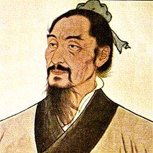

Who Was Mozi?
Mozi (also known as Mo Di and traditionally Latinized as Mo-tzu) was an influential Chinese philosopher of the Warring States period and the central figure associated with Mohism, one of the major philosophical traditions of ancient China. Although the precise dates of his life remain uncertain, he is generally placed in the fifth century BCE, during an era of intense political conflict and philosophical debate.
Mozi developed his philosophy in response to questions about social disorder, warfare, political authority, and human responsibility. His thought was strongly practical: he asked which beliefs and institutions genuinely benefit ordinary people and contribute to a stable society. For this reason, Mohism addressed ethics, government, warfare, economics, ritual, knowledge, and the proper use of social resources.
One of Mozi's best-known teachings is commonly translated as impartial care or, in older translations, universal love. He argued that people should extend concern beyond their own families and groups rather than treating outsiders as morally unimportant. Mozi believed that wider and more impartial concern could reduce conflict and promote mutual benefit throughout society.
Mozi also became famous for his opposition to aggressive warfare and unnecessary extravagance. He criticized costly practices that consumed resources without improving human welfare and argued that rulers should govern for the benefit of the people. Through these ideas, Mozi established a philosophical tradition that became one of the most significant alternatives to Confucianism in ancient Chinese intellectual history.
Mozi: Quick Facts
- Name — Mozi, also known as Mo Tzu or Mo-tzu
- Period — Warring States period of ancient China
- Tradition — Mohism
- Known for — Universal love, impartial care, opposition to aggressive war, meritocracy, practical knowledge, and social benefit
- Major concern — How human conduct and government can produce benefit and reduce social harm
- Political philosophy — Merit-based government, social order, and opposition to aggressive warfare
- Philosophical importance — Founder of one of the major intellectual movements of early Chinese philosophy
- Associated text — The Mozi, a collection of writings attributed to Mozi and later Mohist followers
Mozi and the Warring States Period of China

Mozi lived during the broad era of political fragmentation that culminated in the Warring States period, when competing Chinese states struggled for territory, security, and political dominance. The age was marked by frequent military conflict, changing alliances, and the growth of increasingly powerful states. At the same time, it produced one of the most creative periods in the history of Chinese philosophy and political thought.
Philosophers of this period proposed different answers to questions about government, morality, education, human nature, and social order. Confucians emphasized ethical cultivation and the proper ordering of human relationships, while other thinkers developed alternative approaches to political authority, ritual, law, language, and human conduct. The intellectual competition of the period encouraged philosophers to defend their positions through increasingly systematic argument.
Mozi's philosophy developed partly as a criticism of practices he believed produced unnecessary expense, inequality, conflict, or suffering. His emphasis was strongly practical: philosophical principles should not merely preserve inherited customs but should help create a more orderly and beneficial society. He was especially concerned with the consequences of political decisions for ordinary people.
The political instability of the age also helps explain Mozi's strong opposition to aggressive warfare and his interest in effective social organization. He asked why rulers and states repeatedly pursued policies that brought death and destruction when cooperation could produce greater collective benefit. Mohism therefore emerged as a distinctive response to the practical and moral problems of ancient China's divided political world.
Why Is Mozi Important in Chinese Philosophy?
Mozi is important because Mohism became one of the major philosophical movements of early China and one of the most significant alternatives to Confucian thought. Mohist thinkers developed systematic arguments about ethics, politics, knowledge, language, reasoning, warfare, and social organization. Their intellectual influence was substantial during the Warring States period.
Mozi's philosophy is particularly distinctive because it evaluates many social practices according to their consequences for human welfare and social order. He repeatedly asks whether a practice produces genuine benefit or unnecessary harm. This concern gives Mohist ethics a strongly practical orientation and distinguishes it from approaches that justify customs primarily through tradition.
His ideas also provide an important alternative to Confucian philosophy. The two traditions disagreed over questions including ritual, family relationships, music, social obligation, and the basis for proper conduct. These disagreements were not merely personal disputes but reflected competing conceptions of how a stable and morally successful society should be organized.
Mohism is also historically important because later Mohist thinkers preserved unusually detailed discussions of distinctions, arguments, language, and standards of knowledge. Although the Mohist movement eventually declined as an organized tradition, the surviving writings demonstrate the remarkable diversity of philosophical inquiry in ancient China and remain important sources for the history of logic and epistemology.
What Did Mozi Believe?
Mozi believed that ethical and political practices should be judged by whether they produce benefit and reduce harm. He opposed forms of narrow partiality that caused people to favor their own interests, families, or political groups while disregarding the welfare of outsiders. For Mozi, many forms of conflict could be traced to such unequal patterns of concern.
His philosophy therefore emphasized impartial care, social cooperation, merit-based government, frugality, and opposition to aggressive warfare. These principles were interconnected rather than isolated doctrines. A government that genuinely promoted social welfare would need capable officials, responsible policies, peaceful relations, and the careful use of available resources.
Mozi also argued that rulers should appoint people according to their ability and moral competence rather than simply according to family background or inherited status. Political responsibility should be connected with demonstrated capacity, because incompetent government could harm the wider population. This principle challenged systems of privilege based primarily upon birth.
His teachings also included important claims about Heaven, moral order, and the standards by which human conduct should be evaluated. Mozi did not present philosophy as an entirely abstract intellectual exercise. He believed that correct doctrines should be capable of guiding action and improving the conditions of social life, making Mohism both an ethical and a practical political philosophy.
What Is Mohism?
Mohism was the philosophical tradition associated with Mozi and his followers. It became one of the major schools of thought during the Warring States period and developed into a broad intellectual movement with its own ethical, political, and philosophical commitments. The surviving Mohist tradition contains material produced over more than one stage of its historical development.
Mohist philosophy emphasized practical benefit, impartial concern for others, social order, merit-based government, opposition to aggressive warfare, and frugal use of resources. Mohists argued that rulers and individuals should consider the wider consequences of their actions rather than pursuing narrow personal advantage. Their ideal was a more peaceful and materially secure social order.
Mohist thinkers also developed sophisticated discussions of reasoning, language, knowledge, and argumentation. Later Mohist writings contain material dealing with distinctions, inference, measurement, geometry, and other forms of intellectual analysis. These discussions make the Mohist corpus particularly important for understanding traditions of systematic reasoning in ancient Chinese thought.
Mohism therefore should not be reduced simply to the idea of "universal love." It was a broader philosophical movement concerned with ethics, politics, epistemology, logic, religion, warfare, and practical social organization. The diversity of its surviving writings reflects the development of Mohism into a substantial intellectual tradition rather than a single doctrine associated only with its founding figure.
What Is Mozi's Idea of Universal Love?
One of the most famous ideas associated with Mozi is universal love, often interpreted by modern scholars as impartial care. The Chinese term jian ai is commonly translated in these ways, although the different English translations emphasize somewhat different aspects of the concept. Mozi's concern was with overcoming harmful forms of partiality.
Mozi criticized the tendency of people to care primarily for themselves, their families, or their own political groups while disregarding outsiders. He argued that such partial concern could encourage theft, violence, political aggression, and other forms of conflict because people were willing to harm those whose welfare they considered less important than their own.
The idea does not necessarily mean that all personal relationships must become emotionally identical or that parents and strangers must occupy precisely the same place in every human relationship. Rather, Mozi's argument concerns how people should conduct themselves toward others and how broader, less exclusionary concern can contribute to social order and mutual benefit.
Impartial care therefore has both an ethical and a political dimension. Mozi believed that if individuals and rulers ceased treating outsiders as legitimate objects of exploitation, many forms of social conflict could be reduced. The doctrine is consequently one of the foundations of his larger attempt to connect moral conduct with peace, cooperation, and collective welfare.
Why Did Mozi Oppose Aggressive War?
Mozi strongly criticized aggressive warfare. He distinguished between attacking another state for conquest or advantage and forms of military action understood as defensive. His arguments challenged the assumption that successful expansion and military power automatically justified the enormous costs imposed upon ordinary populations.
His objection was based partly on the enormous human and material costs of warfare. War could result in deaths, destruction, economic losses, displacement, and disruption of ordinary social life. Fields could be neglected, families separated, and resources consumed by military campaigns that produced little genuine benefit for those who suffered their consequences.
Mozi therefore regarded aggressive warfare as inconsistent with the principle of promoting benefit and reducing harm. He argued that a ruler who condemned violence against individuals while approving destructive attacks against entire states faced a serious moral inconsistency. This reasoning became one of the most distinctive features of Mohist political philosophy.
The Mohist tradition also became associated with practical defensive expertise. Ancient accounts connect Mohist followers with the protection of cities against military attack and with knowledge of defensive techniques. This combination of opposition to offensive war and interest in effective defense demonstrates that Mohism was not simply opposed to all military knowledge or preparation.
What Did Mozi Think About Government and Merit?
Mozi argued that governments should select officials according to ability, competence, and moral character rather than simply relying on inherited social status. Positions of responsibility should be given to people capable of performing their duties effectively, because political incompetence could produce widespread disorder and suffering.
This principle is often described as a form of meritocracy, although the modern term should be used carefully when describing ancient Chinese political philosophy. For Mozi, capable people should be given responsibility because competent administration contributes to social benefit and political order. The central concern was practical effectiveness combined with moral suitability.
His political philosophy therefore challenged systems in which privilege was determined primarily by birth. The ability of a person to contribute to society was more important than merely belonging to a particular family or social class. This emphasis reflected the Mohist belief that government should serve a wider social purpose rather than merely preserve inherited advantages.
Mozi also believed that political order required some degree of coordinated standards and clear responsibility. Government, in his view, should not be a collection of competing private interests. Officials and rulers needed to act according to standards capable of directing society toward order and benefit, making the question of competent leadership central to Mohist political thought.
Why Did Mozi Emphasize Frugality?
Mozi criticized excessive expenditure on practices that he believed did not produce sufficient social benefit. His philosophy therefore emphasized frugality and the efficient use of resources. This concern was particularly important in a society where ordinary people could experience poverty while rulers and elites spent heavily on prestigious ceremonies and displays.
He criticized elaborate funerals and prolonged mourning practices when he believed they imposed excessive economic and social costs. Mohist criticism did not arise simply from hostility toward the dead or toward family feeling; rather, Mozi questioned whether extremely costly practices could be justified when they disrupted productive life and placed burdens upon the living.
Mozi also criticized extravagant music and entertainment when they consumed resources that could instead be used to support the basic needs of the population. His arguments directly challenged cultural practices that other philosophical traditions regarded as important for education, ritual, and social harmony. This made the disagreement between Mohism and Confucianism especially significant.
These arguments reflect a broader Mohist principle: resources should be directed toward practices that produce substantial benefit rather than unnecessary luxury. Frugality was therefore connected with a wider concern for social welfare, political responsibility, and the material conditions of ordinary life rather than being merely a personal ideal of individual simplicity.
Why Did Mozi Criticize Music?
Mozi's criticism of music is one of the clearest points of difference between Mohism and Confucianism. Confucian thinkers often regarded music as important for education, ritual, emotional cultivation, and the harmonious ordering of society. Mozi questioned whether elaborate musical institutions justified the resources required to maintain them.
Mozi did not simply argue that music was aesthetically bad. His objection was primarily practical and economic. Elaborate musical performances could require substantial resources, labor, and time, while those resources might instead be used to meet basic social needs. His criticism was directed especially toward costly forms of musical activity supported by political elites.
This criticism illustrates the Mohist habit of evaluating social institutions according to their consequences for collective welfare. A practice could be culturally admired and still be questioned if it consumed resources without providing benefits that, in Mohist terms, justified its social cost. Mozi therefore challenged the authority of tradition when practical consequences appeared harmful.
The debate over music also reveals a broader philosophical difference about what human flourishing requires. Where Confucian thinkers could emphasize cultural refinement and ritual cultivation, Mozi placed greater weight on material welfare, social security, and the reduction of suffering. The disagreement consequently concerned competing visions of both ethics and political priorities.
What Did Mozi Believe About Heaven?
Mozi's philosophy includes a significant role for Heaven, often referred to as Tian in discussions of ancient Chinese thought. Mohist accounts do not present moral order as merely a matter of individual preference. Heaven is described as possessing a normative significance for human conduct and as favoring certain forms of ethical and political behavior.
In Mohist texts, Heaven is presented as having a standard for human conduct. Mozi connects proper behavior with principles such as impartial care, justice, and social benefit. Rulers therefore cannot regard political power as morally unrestricted, because government is expected to conform to standards that extend beyond private advantage.
Mohist thought also includes ideas concerning rewards and punishments associated with moral conduct, as well as discussions of spirits and the unseen world. These teachings gave Mozi's ethical philosophy a religious and cosmological dimension. They also show why Mohism should not be reduced to purely secular utilitarianism.
The role of Heaven provides an additional source of authority for Mohist moral criticism. Practices such as aggression and harmful partiality are not condemned only because they produce undesirable consequences; they are also treated as contrary to a larger moral order. This combination of practical reasoning and cosmological normativity is an important feature of Mohist philosophy.
Mozi on Knowledge, Evidence, and Practical Reasoning
Mozi and later Mohist thinkers were interested in how people can distinguish reliable claims from unreliable ones. Mohist writings discuss methods for evaluating statements and determining whether beliefs are supported by appropriate standards. This concern reflects the broader Mohist attempt to connect philosophical argument with disciplined methods of judgment.
The Mohists placed importance on examining claims through standards that could be connected with observation, practical experience, and established examples. A doctrine should not be accepted merely because it was asserted by an influential person. Its historical basis, observable consequences, and practical application could all become relevant to evaluating its credibility.
This makes Mohism particularly important for the history of Chinese logic and epistemology. Later Mohist writings contain sophisticated discussions of language, distinctions, reasoning, and argument. These materials demonstrate a sustained interest in how concepts can be defined and how correct judgments can be separated from mistaken ones.
Mohist reasoning was closely connected with practical concerns. Knowledge was valuable not simply as theoretical possession but because correct understanding could guide effective action. In this respect, the Mohist interest in evidence and argument formed part of a larger philosophical project aimed at improving ethical conduct, political decision-making, and social organization.
Mozi and the Development of Logic in Ancient China
Mohist thinkers made important contributions to the development of systematic reasoning in ancient Chinese philosophy. Later sections of the Mozi contain discussions concerning names, distinctions, arguments, analogy, and the conditions under which statements can be accepted. These materials are often associated with the later Mohist tradition rather than attributed directly to the historical Mozi.
These writings are especially significant because they show that ancient Chinese philosophy included sustained reflection on argumentation, language, knowledge, and reasoning. Mohist thinkers investigated how terms distinguish one thing from another and how similarities and differences can be used in forming judgments and arguments.
Their discussions should not simply be treated as identical to the formal logical traditions later developed in ancient Greece or modern Europe. Nevertheless, the Mohist writings contain rigorous analytical concerns and important attempts to establish standards for correct reasoning. They are therefore essential to any broad history of logical thought in ancient China.
It is consequently more accurate to describe Mohism as a broad philosophical tradition rather than simply an ethical doctrine about universal love. Its surviving intellectual legacy includes questions about how language represents reality, how distinctions are made, and how arguments can be assessed according to rational and practical standards.
Mozi's Main Philosophical Ideas
Mozi's philosophy can be understood through several interconnected principles concerning ethics, politics, warfare, knowledge, and social organization. Although these ideas are often discussed separately, they form part of a wider attempt to explain how human beings can reduce conflict and create a society characterized by greater order and collective welfare.
Universal Love or Impartial Care
Mozi argued for impartial concern toward others rather than allowing narrow group loyalty to justify harming outsiders. The principle of jian ai challenged forms of selfishness and political partiality that, in his view, contributed to conflict between individuals, families, and states.
Promotion of Benefit
Moral and political practices should promote genuine social benefit and reduce unnecessary harm. Mozi repeatedly evaluates institutions according to their effects on security, material welfare, social cooperation, and the lives of ordinary people rather than accepting tradition as sufficient justification.
Opposition to Aggressive War
Offensive warfare should be rejected because it produces extensive human suffering and material destruction. Mozi's arguments against aggression combine moral criticism with practical attention to the deaths, economic losses, and social disruption produced by military conquest.
Merit-Based Government
Political offices should be given to capable and morally suitable people rather than being determined solely by inherited status. Competence in government was important because effective leadership could contribute to social order, while privilege without ability could damage the wider community.
Frugality
Resources should be used efficiently and directed toward practices that provide meaningful social benefit. Mozi therefore criticized forms of luxury and expenditure that he believed placed heavy burdens upon society while failing to improve the material and political conditions of ordinary people.
Practical Knowledge
Claims should be evaluated through evidence, observation, reasoning, and their practical consequences. The broader Mohist tradition developed this concern into detailed discussions of language, distinctions, argument, and the standards by which knowledge can be judged.
Mozi vs Confucius: How Were Their Philosophies Different?
Mozi and Confucian thinkers both sought a stable and ethical society, but they disagreed about how such a society should be achieved. Both traditions were concerned with political disorder and the formation of human character, yet they developed significantly different views about social relationships, ritual practices, and the standards by which institutions should be evaluated.
Confucian philosophy placed great importance on family relationships, ritual, tradition, education, and the cultivation of appropriate moral relationships. Mozi was more critical of elaborate ritual and argued for impartial concern that extended beyond one's immediate family. His emphasis challenged the moral significance that Confucianism attached to differentiated family obligations.
Mozi's criticism of expensive ceremonies, prolonged mourning, and elaborate music directly challenged several practices valued by Confucian thinkers. Where Confucians could regard these practices as important for cultural and moral cultivation, Mozi questioned whether their social costs were justified by their practical benefits.
The disagreement between Mohism and Confucianism became one of the important philosophical debates of the Warring States period. Their rivalry reveals the diversity of ancient Chinese philosophy: thinkers could agree that society required moral order while disagreeing deeply about whether that order should be grounded primarily in ritual cultivation, impartial concern, practical benefit, or other principles.
What Is the Mozi Text?
The Mozi is the principal text associated with Mozi and the Mohist tradition. It is not simply a single book written personally by Mozi. Instead, it is a composite collection containing material associated with Mozi and later Mohist thinkers, reflecting the development of the movement over an extended period.
The text covers a wide range of subjects, including ethics, political philosophy, warfare, religion, logic, epistemology, and practical reasoning. Some sections defend characteristic Mohist doctrines such as impartial care and opposition to aggressive warfare, while other portions preserve highly technical discussions developed within later stages of the Mohist tradition.
Because the text developed over time, scholars distinguish between different layers and sections of the Mozi. This is important when discussing which ideas can confidently be attributed to the historical Mozi himself. The relationship between the founder and the later intellectual movement remains a major issue in scholarly study.
The Mozi is therefore valuable both as a source for the ideas traditionally associated with Mozi and as evidence for the wider development of Mohist philosophy. Its preservation allows modern readers to study a tradition that was once one of the most powerful intellectual competitors to Confucianism in ancient China.
What Do We Actually Know About Mozi?
Like many ancient philosophers, Mozi's historical biography is not known with complete certainty. Ancient sources provide information about him and his movement, while the surviving Mozi text reflects the work of a broader Mohist tradition. As a result, historians must distinguish between relatively secure conclusions and details preserved through later literary tradition.
Relatively Well Established
- Mozi was an important thinker associated with the Warring States period.
- He is traditionally regarded as the founder or central figure of Mohism.
- Mohist philosophy emphasized impartial care and social benefit.
- Mohists strongly criticized aggressive warfare.
- Mohist writings contain important discussions of reasoning, knowledge, and argument.
Less Certain
- Precise details about Mozi's life and biography.
- The exact authorship of individual sections of the Mozi.
- The precise historical development of the Mohist movement.
Mozi's Influence on Chinese Philosophy
Mohism became one of the most influential philosophical movements of the Warring States period. Mohist arguments were important enough that later Confucian thinkers frequently responded to them, especially on questions concerning impartial care, family obligations, ritual, and the standards of ethical conduct.
Mohist philosophy contributed to debates about morality, government, warfare, ritual, religion, knowledge, language, and reasoning. The movement's influence was therefore much broader than the single doctrine of universal love with which Mozi is often popularly associated. Mohist thinkers participated in many of the central intellectual controversies of their age.
Although Mohism declined as an organized intellectual movement after the early imperial period, the surviving texts remain important sources for understanding the diversity of ancient Chinese philosophy. Later historical developments gave Confucian traditions a more dominant position, but this should not obscure the major influence that Mohism exercised during earlier centuries.
Modern scholarship has also renewed attention to Mohist thought because of its discussions of impartial concern, opposition to aggression, merit, evidence, and reasoning. Mozi continues to be studied not only as a historical figure but as a philosopher whose arguments raise enduring questions about social responsibility, political power, ethical partiality, and the consequences of human action.
Mozi's Philosophy Explained Simply
Mozi asked a practical philosophical question: how can human beings organize society so that people experience greater benefit and less harm? Rather than accepting every established tradition as inherently valuable, he examined whether particular beliefs and institutions actually contributed to peace, security, cooperation, and human welfare.
His answer involved impartial concern for others, opposition to aggressive warfare, merit-based government, frugality, and careful attention to evidence and practical consequences. Mozi believed that many social conflicts arise because people and states care too narrowly about their own interests while ignoring the harm inflicted upon others.
- Ethics: Practice impartial care toward others.
- Politics: Choose capable people for positions of responsibility.
- War: Reject aggressive warfare because of its destructive consequences.
- Economics: Avoid unnecessary luxury and waste.
- Knowledge: Examine claims through evidence, observation, and reasoning.
- Goal: Promote social benefit and reduce harm.
Frequently Asked Questions About Mozi
Who was Mozi?
Mozi was an ancient Chinese philosopher associated with the Warring States period and the founder or central figure of Mohism.
What is Mozi famous for?
Mozi is famous for Mohism, universal love or impartial care, opposition to aggressive warfare, merit-based government, frugality, and practical approaches to ethics and knowledge.
What is Mohism?
Mohism is the philosophical tradition associated with Mozi. It emphasizes impartial care, social benefit, merit, frugality, opposition to aggressive war, and systematic reasoning.
What did Mozi believe about universal love?
Mozi argued that people should extend concern beyond their immediate family or group and treat others with impartial care. He believed this could reduce conflict and increase social benefit.
Did Mozi oppose war?
Mozi strongly opposed aggressive warfare. His arguments emphasized the human suffering, destruction, and economic costs produced by offensive wars.
What did Mozi think about government?
Mozi favored selecting officials according to ability and moral competence rather than relying solely on inherited status.
Why did Mozi believe in frugality?
Mozi believed resources should be used for genuine social benefit rather than unnecessary luxury and extravagant practices.
What did Mozi think about music?
Mozi criticized elaborate musical practices when he believed their costs in resources and labor outweighed their benefits to society.
What is the Mozi book?
The Mozi is a collection of writings associated with Mozi and later Mohist thinkers. It covers ethics, politics, warfare, religion, knowledge, logic, and practical reasoning.
Was Mozi a Confucian?
No. Mozi founded or became the central figure of Mohism, a distinct philosophical tradition that frequently criticized aspects of Confucian thought.
Why is Mozi important today?
Mozi remains important because his philosophy raises enduring questions about impartial morality, war and peace, political meritocracy, social welfare, resource use, and the relationship between evidence and ethical decision-making.
Related Chinese Philosophers and Thinkers
Mozi was one of several major thinkers who shaped the philosophical debates of ancient China. Explore other Chinese philosophers and traditions to compare different approaches to ethics, politics, knowledge, and human life.
Philosophy Branches Connected to Mozi
Mozi's philosophy connects strongly with ethics, political philosophy, epistemology, logic, and questions concerning war, justice, and social organization.
Why Mozi Still Matters
Mozi remains one of the most distinctive thinkers in the history of ancient Chinese philosophy. His philosophy challenged conventional assumptions about family preference, ritual, luxury, political authority, and warfare.
His principle of impartial care raises a question that remains relevant to ethical philosophy: should moral concern extend equally to people outside our own family, community, or political group?
Mozi's criticism of aggressive warfare, emphasis on merit, concern with social welfare, and interest in evidence and reasoning make Mohism an important part of the broader history of ethics, political philosophy, and epistemology.
Explore Great Philosophers
Mozi's Philosophy of Benefit and Social Welfare
A central concept in Mohist philosophy is benefit, often discussed through the idea of promoting what is beneficial to society and avoiding what causes unnecessary harm. Mozi was interested in whether political and moral practices improved the actual conditions under which people lived, rather than merely preserving prestigious customs.
Mozi applied this standard to moral conduct, political decisions, warfare, economic practices, and social customs. A practice should not be defended simply because it is traditional; its effects on human welfare must also be considered. This gave Mohist argument a critical character, allowing established institutions to be questioned according to standards of practical consequence.
This practical approach gives Mohism a distinctive place in ancient Chinese ethics. Mozi repeatedly asks what policies and behaviors actually contribute to order, security, material well-being, and peaceful cooperation. A society suffering from poverty, violence, or disorder could not be regarded as successful merely because it maintained elaborate traditions.
Modern readers sometimes compare this emphasis on consequences with forms of utilitarian moral reasoning, but Mohism developed within a very different historical and philosophical context. Mozi's thought also includes ideas about Heaven, moral standards, and proper social hierarchy. His philosophy should therefore be understood on its own terms rather than treated as a simple ancient version of a modern ethical theory.